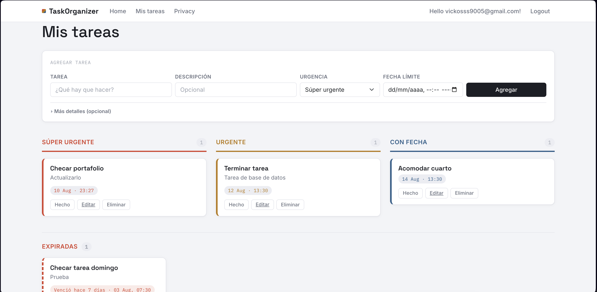

LiveTask Organizer
A task manager with user accounts, where each person only ever sees their own board. The part I like most is that tasks re-sort themselves: you pick an urgency when you create one, but as the deadline gets closer the task climbs on its own into Urgent and then Super urgent. The urgency you chose only acts as a floor, it never drops. It's deployed on Azure, with ASP.NET Core Identity handling registration and login.
Heads up: it's on Azure's free tier, so give it a moment to wake up. Feel free to create an account!
C# · ASP.NET Core · Razor Pages · EF Core · SQL Server · Azure